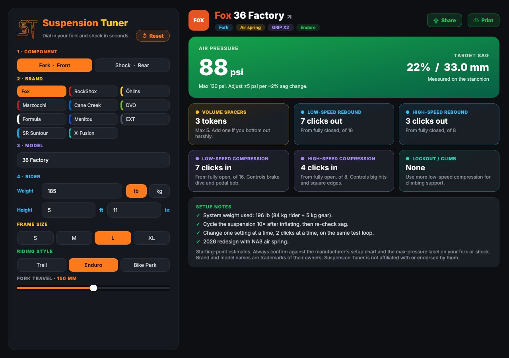
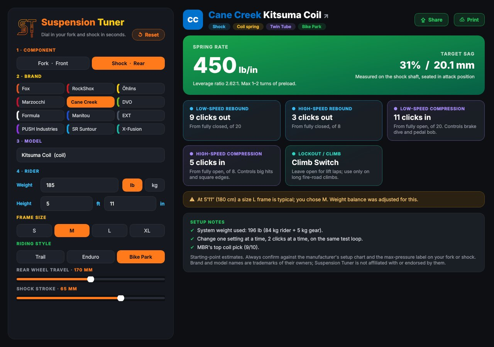

Air pressure & spring rate
A starting PSI for air springs or a spring rate for coil shocks, worked out from your weight, your bike and your riding style.
Pick your suspension, enter your weight, height, frame size and riding style. Suspension Tuner gives you a starting setup for air pressure, sag, volume spacers, rebound and compression, so you spend less time in the parking lot and more time on the trail.

One screen, every number you need to set your suspension up in the parking lot.
A starting PSI for air springs or a spring rate for coil shocks, worked out from your weight, your bike and your riding style.
Clicks out from fully closed, matched to your spring setting, so the bike tracks the ground without feeling like a pogo stick.
Low- and high-speed compression where your damper has them, with an open or firm setting for climbs.
How many tokens to run, plus how many your model can take.
Sag as a percentage and in millimetres on the stanchion or shaft, so you can check your setup with a zip tie.
Share your setup as an image or text, print it for the shop, or tap the model name to open its spec page.
Fork or shock, then the brand and model, from the Fox 36 to the RockShox Super Deluxe.
Weight in lb or kg, height in ft and in, frame size, and how you ride: Trail, Enduro or Bike Park.
Pump to the pressure, set your clicks, check your sag, and go. Fine-tune from there.
36 forks and 29 rear shocks from these brands:
Brand names are trademarks of their owners. Suspension Tuner is not affiliated with or endorsed by any suspension brand.
Set up your rear shock the same way, coil or air, with stroke and progression taken into account. Your settings come with warnings when something is near its limit, such as a pressure close to the maximum on the label.
Get Suspension Tuner
They are a starting point, not a final answer. Every bike, rider and trail is different, so use them as a baseline, then fine-tune. Always check the manufacturer's setup guide and never go above the maximum pressure printed on your fork or shock.
iPhone and iPad (iOS 17 or later) and Mac (macOS 14 Sonoma or later).
No. Everything is calculated on your device. There are no accounts, no tracking and no ads. Read the privacy policy.
Email support@example.com with the brand and model, and it can be added in a future update.